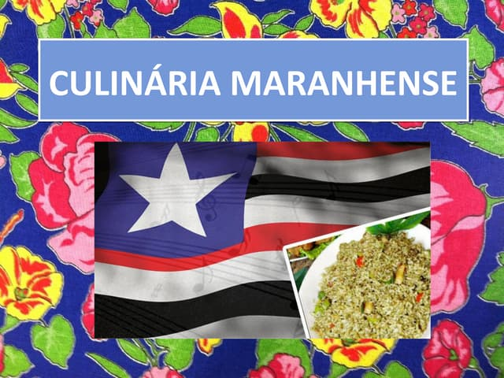

Restaurante Ludovicense
O melhor da comida maranhense
Arroz de Cuxá
Peixe escabeche
O peixe fica embaixo da cobertura de temperos e camarões
Peixe assado ou frito no azeite de coco de babaçu
Torta de camarão seco